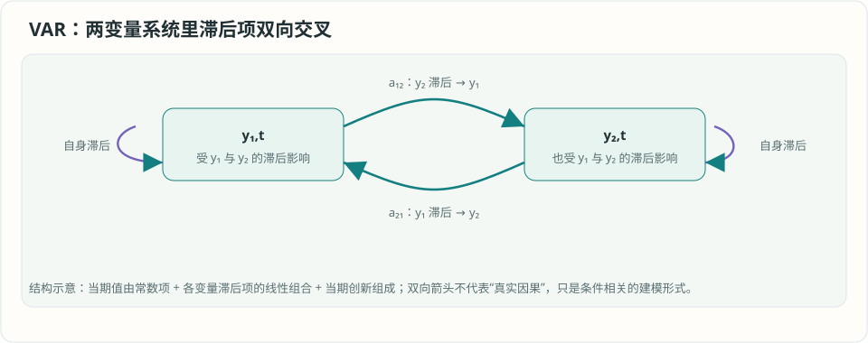
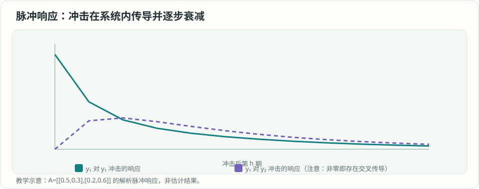
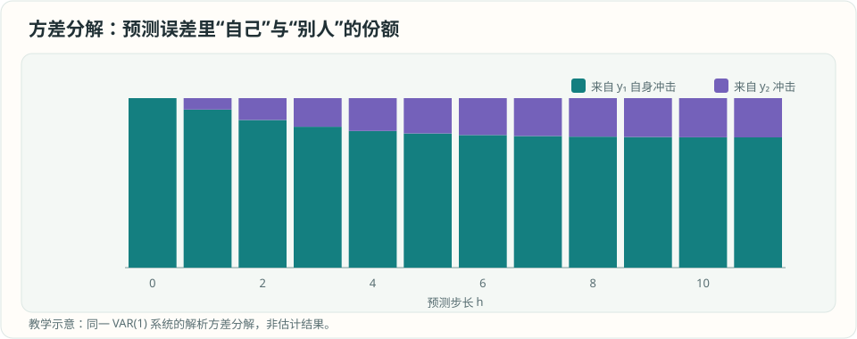

CHAPTER 16 / 28 · MULTIVARIATE
向量自回归：让多个序列互相预测
VAR 把单变量 AR 推广到 k 维：每个变量都用全部变量的滞后项回归。本章讲清结构、定阶与参数增长、Granger 预测因果、脉冲响应的识别问题，以及方差分解的含义。
此前所有模型都只用一个序列。但经济与业务系统里变量互相反馈：利率影响通胀，通胀又影响政策。单变量逐一建模会丢掉交叉滞后与联合动态。
先纠正一个误解：Granger 因果不是真实因果。它只说明“加入 x 的历史能改善对 y 的预测”，不含干预含义。把它直接读成“x 导致 y”是最常见的误用。
01 · VAR 的结构
VAR(p) 中，k 个变量的当期值由常数项、各自与彼此的 p 阶滞后、以及当期创新共同决定。以 VAR(1) 为例，写成向量形式如下。

y₁ 与 y₂ 的当期值都受彼此与自身的滞后影响（双向箭头）。这是建模形式上的条件相关，不等同于真实因果。图为结构示意。与单变量模型最大的不同在于：各方程必须联合估计，因为不同方程的创新之间通常同期相关（Σ 非对角）。逐一单独估计会忽略这种同期相关，影响推断。
02 · 定阶与参数增长
每个方程的系数数量随变量数与滞后阶数迅速膨胀，这是 VAR 最主要的实践约束。
| 准则 | 倾向 | 权衡 |
|---|---|---|
| AIC | 选更多滞后 | 预测导向；偏差小但方差大 |
| BIC | 选更少滞后 | 相合性导向；参数多时更保守 |
| HQIC | 居中 | 惩罚介于 AIC 与 BIC 之间 |
VAR 要求各变量（或处理后的变量）平稳。若水平含单位根，简单差分虽可平稳，却可能丢掉长期均衡关系——这正是下一章协整要处理的问题。
03 · Granger 因果
“x Granger 引起 y”的含义是：在 y 自身滞后之外，加入 x 的滞后能显著改善对 y 的预测。它的原假设是“x 的全部滞后系数联合为零”，用 F 或卡方统计量检验。
必须强调：它衡量的是预测增量，不是干预因果。两个变量可能因为共同趋势而互相“引起”；也可能存在第三变量同时驱动两者。经验上“黄油产量 Granger 引起 GDP”这类反例，正是共同趋势造成的假象。因此 Granger 结论应配合理论与平稳性处理来解读。
04 · 脉冲响应与识别
系数矩阵包含大量信息，但存在反馈时难以直接解读。脉冲响应函数（IRF）追踪“给某个变量一个冲击后，系统各变量在未来各期的响应路径”。

问题在于：当期创新之间通常同期相关，无法把它们看成互不相关的“原始冲击”。常见做法（Cholesky 正交化）会依赖变量的排序——排序不同，IRF 会不同。这意味着 IRF 需要识别假设（如排序或符号约束）才能解释，不能不加说明地当作客观事实。失衡的解读往往是 VAR 应用中最隐蔽的错误。
05 · 方差分解
预测误差方差分解（FEVD）回答：y 的 h 步预测误差方差中，有多大比例由自身冲击贡献、多大比例由其他变量的冲击贡献。

解读 FEVD 同样受识别与排序影响，且它是样本内的分解：份额的大小不属于因果效应，只描述预测误差的归属。
06 · 交互：交叉系数与响应
固定 A 的主对角元（0.5、0.6），拖动滑块改变交叉系数 a₁₂，看 y₁ 对 y₂ 冲击的脉冲响应形状如何变化。a₁₂ 越大，交叉传导越强。
本图表示已知系数下的理论响应（柱高已归一），不是从真实数据估计出来的。
07 · Python：拟合与检验
下面生成一个已知系数的平稳 VAR(1)，用 statsmodels 选择阶数、估计系数，并做 Granger 因果检验。只依赖 numpy 与 statsmodels。
import numpy as np
from statsmodels.tsa.api import VAR
rng = np.random.default_rng(16)
n = 600
A = np.array([[0.5, 0.3], [0.2, 0.6]]) # 特征值模均小于 1，平稳
Y = np.zeros((n, 2))
for t in range(1, n):
Y[t] = A @ Y[t-1] + rng.standard_normal(2)
model = VAR(Y)
print(model.select_order(8).summary()) # 期望选中滞后 1
result = model.fit(2)
print("A1 估计:", np.round(result.coefs[0], 3)) # 期望接近真实 A
print("y2 是否 Granger 引起 y1:",
result.test_causality(0, 1, kind="f").pvalue)
assert np.all(np.abs(np.linalg.eigvals(A)) < 1)此例中信息准则会选中真实阶数 1，系数估计接近真值。这是合成数据上的结构验证，不构成对任何真实系统的结论；真实应用需先处理非平稳与非平稳趋势，并说明脉冲响应的识别假设。
08 · 与协整的衔接
VAR 要求变量平稳。但对两个同阶非平稳变量，直接差分虽可平稳，却会丢掉它们之间的长期均衡。如果它们存在稳定的线性组合（协整），更合适的做法是误差修正模型（VECM），它同时保留短期动态与向长期均衡的回复。下一章展开。
进一步阅读与技术核对
引用指向 VAR、因果检验与实现接口的官方资料。